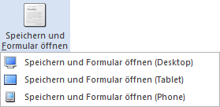

Der Menüpunkt "Vorlagen Anlage" kann über…
1 WinLine START
1 Vorlagen
1 Vorlagen Anlage
… aufgerufen werden und beinhaltet die folgenden Unterpunkte:
ü Individuelle Formulare
Im Menüpunkt
"Individuelle Formulare" können eigene WinLine Fenster für ausgewählte
Programmbereiche gestaltet werden (z.B. für die Schnellerfassung der
Kontenanlage oder der Belegerfassung).
ü Export-/Import-Vorlagen
Im
Menüpunkt "Export-/Import-Vorlagen" können Vorlagen zum Ex- und Import von
Stammdaten und Bewegungsdaten definiert werden. Dabei kann frei entschieden
werden, welche Felder exportiert oder importiert und welche Felder mit welchen
Werten vorbesetzt werden sollen.
ü Suchstrategien
Im Menüpunkt
"Suchstrategien" können Vorlagen für Suchstrategien erstellt werden.
ü FORM - Stammdaten-Übernahme
Im
Menüpunkt "FORM - Stammdaten-Übernahme" werden alle Vorlage für die "FORM
Datenanlage" zur Überarbeitung aufgeführt. Die Anlage der Vorlagen erfolgt
automatisch über den "FORM Designer".
Hinweis
Einige Vorlagentypen beinhalten Spezial- bzw. Sonderfunktionen und werden in den folgenden Kapiteln detailliert erläutert:
ü Vorlagen des Typs "Stammdaten - Artikel"
ü Vorlagen des Typs "Stammdaten - Preise"
ü Vorlagen des Typs "Bewegungsdaten - Belege"
ü Vorlagen des Typs "Bewegungsdaten - CRM"
ü Vorlagen des Typs "Bewegungsdaten - Lagerbuchung"
ü Vorlagen des Typs "Bewegungsdaten - Produktionsauftrag"
ü Vorlagen des Typs "Bewegungsdaten - PPS Zeiten"
Buttons
Ø Ok
Mit Drücken des Buttons "Ok" bzw. der Taste F5 wird die Vorlage gespeichert und steht damit in den entsprechenden Programmteilen (Stammdatenerfassung, Stammdaten Editieren, WinLine EXIM, etc.) zur Verfügung.
Ø Ende
Durch Drücken des "Ende"-Buttons oder der ESC-Taste wird das Fenster geschlossen. Alle vorgenommenen Änderungen gehen verloren.
Ø neue Vorlage
Durch Anklicken des Buttons "neue Vorlage" kann eine neue Vorlage angelegt werden, wobei als Vorlagentyp der Bereich verwendet wird, welcher gerade aktiv ist.
Ø Vorlage bearbeiten
Durch Auswahl dieses Buttons wird die gerade markierte Vorlage zum Bearbeiten geöffnet.
Hinweis
Auch per Doppelklick oder "Enter"-Taste kann eine Vorlage editiert werden.
Ø Vorlage löschen
Durch Anklicken des "Löschen"-Buttons kann die aktuell markierte Vorlage gelöscht werden.
Hinweis
Der Button steht während des Bearbeitens oder der Anlage einer Vorlage nicht zur Verfügung.
Ø Vorlagen aktualisieren
Mit Hilfe des Buttons "Vorlagen aktualisieren" wird der interne Aufbau aller Vorlagen mit dem Datenmodell von WinLine verglichen und ggfs. aktualisiert.
Beispiel
Bei der Definition einer Vorlage war es in dem Feld "Artikelnummer" nur möglich 20 Zeichen zu erfassen. In der Zwischenzeit wurde dieses aber auf 30 Zeichen erweitert. Durch Anwahl des Buttons wird diese Information an die Vorlage weitergeben.
Ø Speichern und Formular öffnen
Dieser Button, welcher nur bei der Definition von Vorlagen des Typs "Individuelles Formular" ausgewählt werden kann, speichert die aktuell bearbeitete Vorlage ab und öffnet diese in einem eigenen Fenster. In welchem Modus das Fenster hierbei geöffnet werden soll, kann über ein separates Untermenü bestimmt werden.
Beispiel

Hinweis
In dem aufgehenden Fenster kann die Vorlage auch live getestet werden. D.h. die Eingabe einer Stammdatennummer ist z.B. möglich.
Ø WebService-Schema exportieren
Handelt es sich um eine Vorlage mit WebService, so kann durch Anklicken dieses Buttons eine zur Vorlage passende XSD-Datei (XML Schema Definition) erzeugt werden.
Hinweis
In einer XSD-Datei wird die Struktur des XML-Dokuments beschrieben ist. Diese Datei ist vor allem für die Erstellung von XML-Dateien hilfreich, welche mit den WebService verarbeitet werden sollen.
Ø Berechtigungen
Mit dem Button "Berechtigungen" kann das Fenster "Objekt Berechtigungen" geöffnet werden, um für die Vorlage Berechtigungen für Benutzer oder Benutzergruppen zu vergeben. Nähere Informationen zu den Objekt Berechtigungen finden Sie im Kapitel "Objektberechtigungen".
Ø Berechtigung (allgemeine Vorlage)
Für Vorlagen des Typs "Individuelles Formular" kann mit Hilfe dieses Buttons die Objekt-Berechtigungen für das Standard-Formular "0 - Allgemein" definiert werden (Personenkonten, Sachkonten, usw.).
Ø FORM-Ansicht bearbeiten
Handelt es sich um eine Vorlage des Typs "Individuelles Formular", so kann mit Hilfe dieses Buttons der FORM-Designer geöffnet werden.
Hinweis
Im Gegensatz zur klassischen Eingabe unterstützt die FORM-Ansicht folgende Funktionen:
ü Lese- und Bearbeitungsmodus
ü Responsive HTML-Design
ü Erweiterte Layout-Komponenten
Achtung
Die FORM-Ansicht basiert immer auf der Definition des individuellen Formulars. D.h. werden Felder hinzugegeben oder entfernt, so muss die Änderung in der FORM manuell nachgeführt werden.